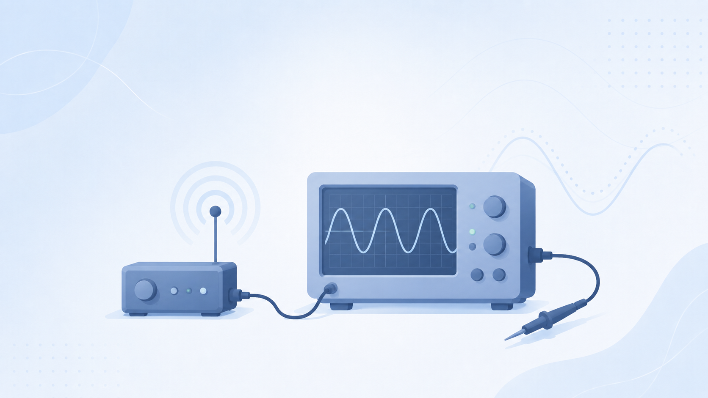
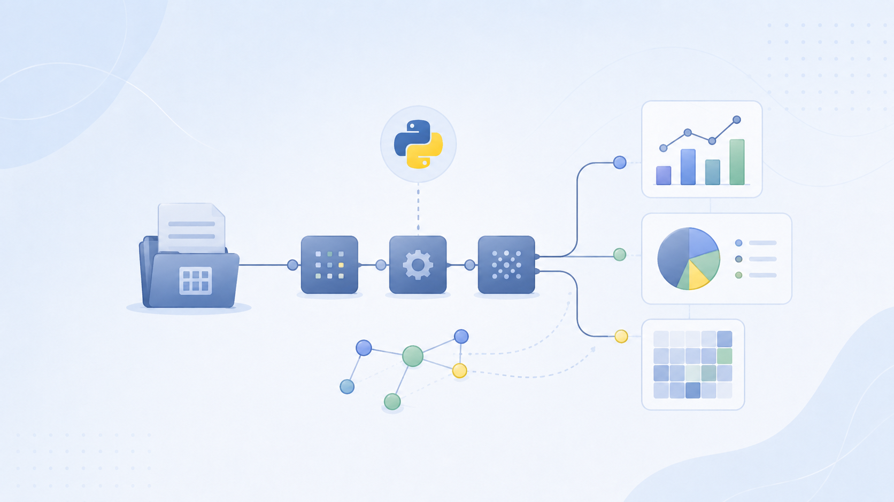
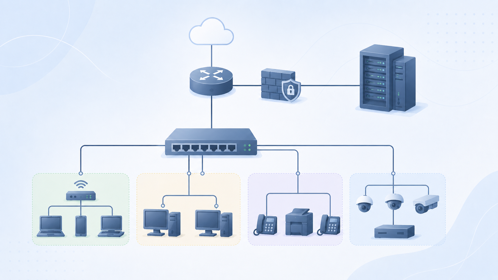
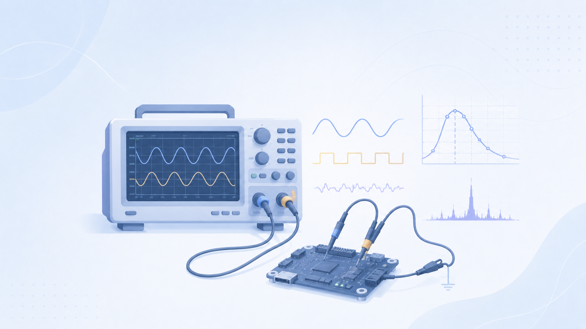
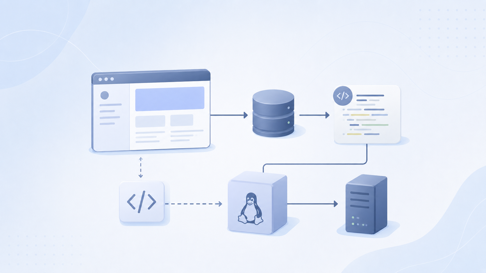

SAE 1.02
S'initier aux réseaux informatiques
Conception et configuration d'une infrastructure réseau d'entreprise sous EVE-NG
Voir le projetBUT Réseaux & Télécommunications · 2025–2028
Étudiant en 1ère année · IUT de Colmar · Université de Haute-Alsace
Passionné par les réseaux et la cybersécurité, je construis ce portfolio pour rendre compte de mes apprentissages, de mes projets SAE et de ma progression tout au long du BUT R&T.

Quentin ALTINOK
BUT R&T · Promo 2025–2028
Après un Bac Général au Lycée Ribeaupierre (spécialités Physique-Chimie, Maths, SVT), j'ai intégré le BUT R&T à l'IUT de Colmar en 2025.
Mes expériences — stage en salle de sport, vendanges, coaching basketball — m'ont appris la rigueur, l'organisation et le travail en équipe.
Mon objectif est de me spécialiser en cybersécurité au fil du BUT R&T, puis de poursuivre en master.
Je suis alternant aux CDRS à Colmar de 2026-2027.


Les 3 compétences officielles du tronc commun BUT Réseaux & Télécommunications, développées à travers les SAE et les enseignements.
Administrer les réseaux et l'Internet : configuration des services (DNS, DHCP, HTTP, FTP), sécurisation des infrastructures, gestion des systèmes d'exploitation Linux et Windows.
Connecter les entreprises et les usagers : déploiement des supports de transmission, analyse de signaux, mise en service des systèmes de ToIP et des équipements d'accès.
L'ensemble des SAE réalisées en 1er et 2ème semestre du BUT R&T. Cliquez sur un projet pour accéder à la fiche complète.
Semestre 1
SAE 1.02
Conception et configuration d'une infrastructure réseau d'entreprise sous EVE-NG
Voir le projet
SAE 1.03
Mesures et analyse de signaux à l'oscilloscope, caractérisation d'un système de transmission élémentaire, rédaction d'un rapport technique.
Voir le projetSAE 1.04
Conception et réalisation de ce portfolio web en HTML/CSS. Ce site en est la preuve concrète : architecture web, design responsive, accessibilité.
Voir le projet
SAE 1.05
Manipulation et analyse de jeux de données avec Python. Développement d'algorithmes de traitement et de visualisation.
Voir le projetSemestre 2

SAE 2.01
Conception et déploiement d'une infrastructure réseau complète pour une PME : plan d'adressage, routage inter-VLAN, sécurisation.
Voir le projet
SAE 2.02
Analyse approfondie de signaux et systèmes de transmission en laboratoire. Rapport technique détaillé avec mesures et conclusions.
Voir le projet
SAE 2.03
Développement et déploiement d'un outil répondant à un besoin métier réel : analyse du besoin, développement Python, documentation.
Voir le projetRegard critique et honnête sur mon apprentissage, mes progrès et mes perspectives.
Cette première année m'a permis de découvrir concrètement le monde des réseaux : de la couche physique (signaux, câblage) aux protocoles applicatifs (DNS, DHCP, HTTP), en passant par la programmation Python et la création de sites web. J'ai appris à configurer des équipements réseau, à lire des trames avec Wireshark, à administrer des systèmes Linux et à produire des livrables techniques professionnels.
Entre le début du S1 et la fin du S2, j'ai nettement progressé en configuration réseau, en Python et en rédaction de rapports techniques. Les SAE m'ont permis de mettre en pratique directement les enseignements théoriques, ce qui a accéléré ma montée en compétences.
2026
Alternance en cybersécurité pour le BUT 2
2028
Obtenir le BUT R&T
2029
Master Sécurité des Systèmes d'Information en alternance
Une question sur mon portfolio ? N'hésitez pas à me contacter.